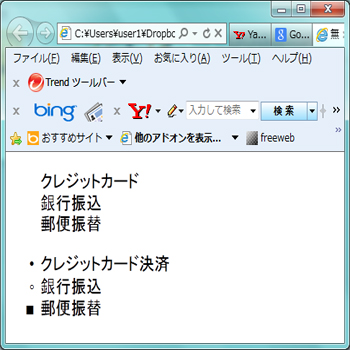
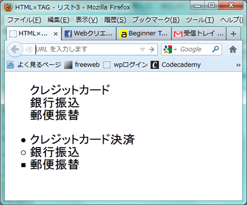

リストのマークを変更したい
list-style-type:★ (★…disc、circle、square、none)
■値の指定方法
disc…●
circle…○
square…■
none…マークなし
【css Source】
#sample1{
list-style-type:none;
}
#sample2{
list-style-type:disc;
}
#sample3{
list-style-type:circle;
}
#sampl4{
list-style-type:square;
}
【HTML Source】
<body>
<ul id="sample1">
<li>クレジットカード決済</li>
<li>銀行振り込み</li>
<li>郵便振替</li>
</ul>
<ul>
<li id="sample2">クレジットカード決済</li>
<li id="sample3">銀行振込</li>
<li id="sample4">郵便振替</li>
</ul>
</body>
| -Internet Explorer- | -Firefox- |
|---|---|
|  |  |
©2012 -takikawa,haebaru,hasegawa,ohura-